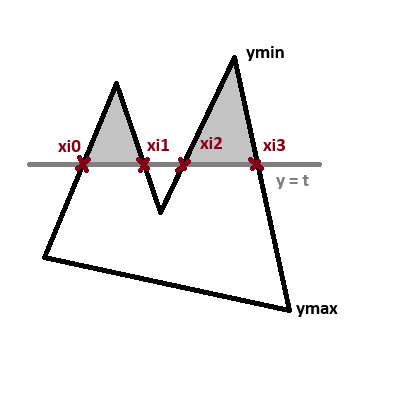

Building Graphics Library
I’m doing some graphical programming recently, and poking around some three-dimensional rendering. However, before I dive into that, I’d like to tackle 2D rendering. To do that, I’d like to work with a library that allows an easy and cross-platform access to low-level graphics. I want to be able to make a window and draw a line without much of a hassle.
Probably the most widely used library for this purpose is called SDL. It is relatively easy to use and provides access to features like windowing, audio, keyboard, mouse, joystick, graphics, etc. It allows to use .bmp files directly, and also offers another library for working with images. It also contains only the most basic graphical primitives like points, lines, and rectangles. This poses a fun challenge for implementing everything else ourselves.
Note that SDL is also used as a core for some popular graphical/game-development platforms like pygame and Love2D.
As many low-level libraries written in C, this library provides good performance with fine-tune control. This often comes at the cost of boilerplate code. Although I’d say that this library is still very much nice compared to some other platforms.
Now that we established the necessity of the external library (trust me, you don’t want to write this stuff yourself), we need to somehow get it. You can download, compile and link the library directly from the website, or use CMake to handle it, but I personally prefer to use package managers. My personal choice is vcpkg, but you can use anything that you like. I won’t explain the whole process here because I wrote about it in another post. You can also read the guide provided on the package manager website.
Now that we have the SDL, let’s write the boilerplate code to get things going.
Before we write the actual code, I’d like to write a wrapper around SDL.
It’s arguably pointless at this point since everything that it’s doing is mapping the library names (like SDL_RenderClear) to more simple symbols (like clear).
You can even argue that it’s bad in a way that it declares some really simple and common names that you could use somewhere else yourself (like point, line and rectangle).
You can avoid doing it if you don’t like this, however, I’m going to use those symbols hereafter, so you’ll have to reverse them if you don’t want to use them (hopefully it won’t be very hard thing to do).
With this out of the way, let’s make a header file called graphics.h:
#ifndef GRAPHICS
#define GRAPHICS
#include <stdlib.h>
#include <SDL3/SDL.h>
#define clear SDL_RenderClear
#define point SDL_RenderPoint
#define line SDL_RenderLine
#define rectangle SDL_RenderRect
#define update SDL_RenderPresent
#define color SDL_SetRenderDrawColor
#define render_t SDL_Renderer
#endif
Now, let’s write some code:
#include <stdio.h>
#include "graphics.h"
bool init();
void kill();
bool loop();
SDL_Window *window; // window
SDL_Renderer *renderer; // renderer
We are going to declare two global variables called window (that name should be self-evident), and renderer, which is an abstraction provided by SDL to draw things.
The main function looks like this:
int main(int argc, char **argv) {
// quit when failed to initialize
if (!init()) return 1;
// call loop function with delay of 100ms
while (loop()) SDL_Delay(100);
// clean things up
kill();
return 0;
}
This is how many of applications in SDL (and probably in some other libraries) look like:
- initialize stuff, quit when failed
- call some function in a loop with delay
- clean things up and exit
The most important stuff is happening inside of a loop() call, so let’s write it:
bool loop(void) {
SDL_Event e;
// set renderer color to black
color(renderer, 0, 0, 0, 0);
// clear the screen
clear(renderer);
// poll events
while (SDL_PollEvent(&e) != 0)
switch (e.type) {
// when it's time to quit
case SDL_EVENT_QUIT:
// return false
return false;
}
// draw some stuff
draw();
// update renderer
update(renderer);
return true;
}
Note how loop is used inside of the main:
while (loop()) // do something
As you may recall, while continues execution while the condition evaluates to true.
Here, loop is a function that returns a boolean value.
Therefore, our loop will continue to execute while the loop function returns true.
We use event system to handle various events like key or mouse.
Event SDL_EVENT_QUIT is fired when it’s time to quit
(for example, when user clicks on the X window button).
When we return false, the loop is terminated.
Now let’s look at the init function:
bool init(void) {
// SDL_Init initializes video subsystem;
// it returns a negative value upon failure
if (SDL_Init(SDL_INIT_VIDEO) < 0) {
printf("failed to initialize sdl: %s\n", SDL_GetError());
return false;
}
// create a new window ("Title", width, height, flags);
window = SDL_CreateWindow("Window", 256, 256, 0);
// check for failure
if (!window) {
printf("failed to create window: %s\n", SDL_GetError());
return false;
}
// create renderer from the window
renderer = SDL_CreateRenderer(window, NULL);
// check for failure
if (!renderer) {
printf("failed to create renderer: %s\n", SDL_GetError());
return false;
}
return true;
}
Finally, let’s consider the kill function. I think that no comments are needed here.
void kill(void) {
SDL_DestroyRenderer(renderer);
SDL_DestroyWindow(window);
SDL_Quit();
}
Now that we’re done with the boilerplate, we can finally handle the drawing.
Let’s write the draw() function:
void draw(void) {
color(renderer, 255, 255, 255, 255);
line(renderer, 50, 50, 100, 100);
line(renderer, 100, 100, 200, 50);
line(renderer, 200, 50, 50, 50);
}
Try to fire up the program. You should see a triangle.
Now with the boilerplate out of the way, we can finally try to do something more interesting. SDL provides three primitives by default. Out of them, the most important is probably the dot rendering function. Given the dot function, you can easily render a line using a linear equation.
Create a new function called graphics.c.
Include the graphics.h header file here and link it with your main.c source file.
Now you can add functions below into this file.
You can use those functions in your draw() function.
k = (y1 - y0) / (x1 - x0)
y = y0 + k(x - x0)
void my_line(render_t *r, float x0, float y0, float x1, float y1) {
// computations assume that (x0, y0) is on the left from (x1, y1)
if (x0 > x1) {
swap(float, x0, y0);
swap(float, x0, y0);
}
// k is the line slope
float k = (y1 - y0) / (x1 - x0);
// iterate for x between two points
for (float x = x0; x < x1; x++) {
// compute y from the line equation
float y = y0 + k * (x - x0);
// render the point
point(r, x, y);
}
}
Here is the swap macro if you are curious:
#define swap(t, x, y) { t z = x; x = y; y = z; }
Note that we use division in k which makes us to use floats to render lines. There is a famous optimization which enables us to use integers to draw lines. This algorithm is more involved (especially regarding octant generalization), but also more performant as well. It’s called Bresenham Line Algorithm.
Given lines, it’s quite easy to implement rectangles.
Before we proceed, let’s add a new enum into graphics.h.
We’ll use it do denote drawing mode: outlined or filled.
enum {LINE, FILL};
Now onto the rectangle drawing function.
void my_rectangle(render_t *r, int m, float x0, float y0, float w, float h) {
switch (m) {
// with outlined drawing mode
case LINE:
// render four lines around the rectangle perimeter
line(r, x0, y0, x0 + w, y0);
line(r, x0 + w, y0, x0 + w, y0 + h);
line(r, x0 + w, y0 + h, x0, y0 + h);
line(r, x0, y0 + h, x0, y0);
break;
// with filled drawing mode
case FILL:
// from top to bottom
for (float y = y0; y < y0 + h; y++) {
// render horizontal line
line(r, x0, y, x0 + w, y);
}
break;
}
}
Note that both line and rectangle functions are provided for educational purposes. You can use them, of course, but I haven’t benchmarked them, so I can’t tell you whether they will be fast enough for your purposes. It is generally recomended to use SDL functions wherever possible and/or appropriate. I personally use SDL functions to draw both lines and rectangles and would advise you to do so as well.
Now for more interesting part. With simple stuff out of the way, we need to make more general stuff not covered with SDL library.
The first thing we’ll cover is ellipse. Here is an ellipse equation:
(x, y) = (a cos(t), b sin(t)) for 0 <= t <= 2 * pi
Consider that we have parameters called h and k, horizontal and vertical shift, respectively.
x = x + h
y = y + k
We’ll need the pi number here, so it’s a good idea to include it into the graphics.h:
#define PI 3.14159265F
With this equation in mind, let’s try to draw our ellipse.
void ellipse(render_t *r, int m, float a, float b, float h, float k) {
switch (m) {
case LINE:
for (float t = 0; t < 2 * PI; t++) {
float x = a * (float) cos(t) + h;
float y = b * (float) sin(t) + k;
point(r, x, y);
}
break;
}
}
If you try to draw ellipse now, you’ll see that it’s sparsely dotted.
This is because the angle sampling step is too large.
Change the loop iteration step to 0.01f. Everything should be working fine now.
If you are curious, here is another equation for ellipse:
x2 / a2 + y2 / b2 = 1
y2 / b2 = 1 - x2 / a2
y2 = b2 * (1 - x2 / a2)
y = b * sqrt(1 - x2 / a2)
Notation like x2 here is used to denote a square of x.
Note that since we are taking the square root, the solution expands into two clauses:
y = +1 * b * sqrt(1 - x2 / a2)
y = -1 * b * sqrt(1 - x2 / a2)
As an exercise, try to draw ellipse with this equation.
Now let’s tackle the filled ellipse. To do that, we need to slightly rearrange the equation above.
x2 / a2 + y2 / b2 = 1
x2 / a2 = 1 - y2 / b2
x2 = a2 * (1 - y2 / b2)
x = a * sqrt(1 - y2 / b2)
Note the square root expansion
x = +1 * a * sqrt(1 - y2 / b2)
x = -1 * a * sqrt(1 - y2 / b2)
Now we’re ready to implement the algorithm.
void ellipse(render_t *r, int m, float a, float b, float h, float k) {
switch (m) {
case LINE:
...
break;
case FILL:
for (float y = -b; y < b; y++) {
float x = a * (float) sqrt(1 - (y * y) / (b * b));
line(r, -x + h, y + k, x + h, y + k);
}
break;
}
}
Now let’s try to tackle something even more interesting. Given a list of points, how would you render an outlined polygon? Try to think about this before you look at the solution. Yes, grab your pen and paper (or open the notepad), and go through it. Try to write the function and see if it works. I’ll wait.
Done? Let’s look at the solution.
void polygon(render_t *r, int m, float *v, int n) {
if (m == LINE) {
for (int i = 0; i < n; i++) {
line(r, v[2 * i + 0], v[2 * i + 1],
v[2 * ((i+1) % n) + 0], v[2 * ((i+1) % n) + 1]);
}
return;
}
}
There is not much special about the algorithm so far.
We store polygon point coordinates at the v pointer, and use n to specify the number of points.
We then iterate through points, drawing lines between them.
Note that the last line connects the last point to the first point.
We use (i + 1) mod n index to achieve this effect.
Now let’s consider how to draw filled polygons. There are many algorithms that you can use here. I’m going to use perhaps rather intuitive and simple one called Scanline Rendering.
The core idea of the algorithm is simple. We iterate the polygon row by row, from top to bottom, and then examine each edge of the polygon. For each edge that intersects with the row, we write down the intersection point. After that, we sort those points in ascending order. Finally, we iterate through alternate pairs of points and draw line between them.
Here is a picture that will make things a bit more clear.

You may ask: how are we going to determine whether the row intersects with the edge? A great question. To answer it, we need to consider the line equation again.
k = (y1 - y0) / (x1 - x0)
y = y0 + k(x - x0)
y0 - y + k(x - x0) = 0
k(x - x0) = y - y0
x - x0 = (y - y0) / k
x = x0 + (y - y0) / k for ymin < y <= ymax
Look at the polygon function interface above. Recall that we use a pointer v to specify the polygon point coordinates and n to denote the number of said points.
For each edge of the polygon we need to know:
- line slope
k - line point coordinates
x0andy0 - line vertical borders
yminandymax
Let’s write the first part of the function:
void polygon(render_t *r, int m, float *v, int n) {
...
// edge will store data related to the polygon edge
typedef struct { float k, x0, y0, ymin, ymax; } edge;
// allocate memory to store edge data
edge *e = malloc(n * sizeof(edge));
// ymin and ymax are polygon vertical borders
float ymin = v[0], ymax = v[1];
// iterate through polygon edges
for (int i = 0; i < n; i++) {
// set polygon edge coordinates
float x0 = v[2 * i + 0];
float y0 = v[2 * i + 1];
float x1 = v[2 * ((i+1)%n) + 0];
float y1 = v[2 * ((i+1)%n) + 1];
// pick vertical borders for the edge
float eymin = (y0 < y1) ? y0 : y1;
float eymax = (y0 > y1) ? y0 : y1;
// swap points so that (x0, y0) is on the left from (x1, y1)
if (x0 > x1) {
swap(float, x0, x1);
swap(float, y0, y1);
}
// calculate slope
float k = (y1 - y0) / (x1 - x0);
// store data
e[i] = (edge) { k, x0, y0, eymin, eymax };
// set polygon vertical borders
if (eymin < ymin) ymin = eymin;
if (eymax > ymax) ymax = eymax;
}
}
You may notice familiar modulo trick that we use to ensure proper polygon behavior.
Note that we select vertical borders on two levels.
ymin and ymax are vertical borders of the whole polygon.
We’ll use them to set rendering iteration borders.
eymin and eymax however are borders of particular edge.
We’ll use them to determine whether row intersects with the edge.
We also sort edge points by increasing y-coordinate to provide consistent calculations.
So far, so good. Take a look at the second part.
void polygon(render_t *r, int m, float *v, int n) {
...
// xi stores row intersection coordinates
float *xi = malloc(n * sizeof(float));
// iterate row by row
for (float y = ymin; y < ymax; y++) {
// xn is a number of row intersections
int xn = 0;
// iterate through edges
for (int i = 0; i < n; i++) {
// if slope is not zero and row y coordinate is between edge borders
if (e[i].k && y > e[i].ymin && y <= e[i].ymax) {
// write down edge intersection
xi[xn++] = e[i].x0 + (y - e[i].y0) / e[i].k;
}
}
// sort row intersections in increasing order
qsort(xi, xn, sizeof(float), cmp);
// iterate through alternate intersection point pairs
for (int i = 0; i < xn; i += 2) {
// draw line between points
line(r, xi[i], y, xi[i + 1], y);
}
}
// free intersection storage
free(xi);
// free edge storage
free(e);
}
Since I use the standard library qsort function, here is a comparison function.
int cmp(const void *x, const void *y) {
return (int) (*(float *) x - *(float *) y);
}
Note that we deliberately use asymmetric edge borders (ymin < y <= ymax).
This allows to gracefully handle polygon vertices.
Also note that we ignore edges with the slope of zero since we divide by slope.
Try to draw a triangle with outlined and filled drawing mode. Verify that it works correctly in both cases.
I wanted to show you wireframe mesh rendering as well, however, this post is already too long for that. I’ll cover it in the next part. Check out the source code, header file, and main file.